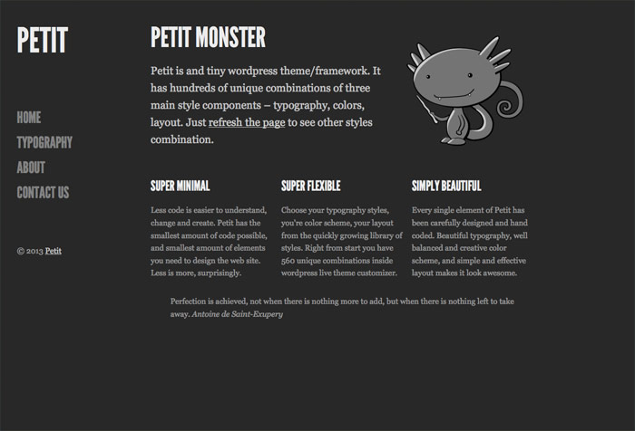

PM

Petit Monster
Free, open source theme design framework that has hundreds of unique styles and supports Wordpress, Tumblr and Blogger
Three main CSS modules
Petit Monster splits the styles to three main design modules, so it’s easy to use only what you need or mix all them to get unique look

Typography.css
Complete typographical style that includes styling main text elements, carefully paired web fonts, vertical rythm and baseline, modular typographical scale beautiful look.

Colors.css
The only place where you difeine colors and backgrounds speaking in CSS and define only them. The quickest way to create unique look in a few lines of code.

Layout.css
Some simple solid evergreen layouts that arrange essential elemetns like header, nav, section, aside on the page and give you a lean start with clever defaults.
Live Customizer
Ideally you would want to preview and change design options live on the site with real content either on your local computer or online. You can do all that with wordpress live customiser inside Petit Monster wordpress theme.

Features

Responsive
Petit has clever responsive.css that takes care of mobile styles and optimisation, so that every style combinations is looking good on every screen size and device.
HTML5 & CSS3
Very minimal HTML 5 boilerplate with minimal set of elements and classes yet enough for most of the websites and super flexibles in terms of CSS styling.

Free & Extendable
Petit Monster is free and open sources under the shortest and most open license MIT wich basically means you can do anything with it. It’s build to be extended with extra styles.
Easy to use
As for the start Petit Monster can be used on three major blogging systems as a theme or anywhere where HTML5&CSS3 works as a framework.
Examples
Download
Styles
Complete typographical style that includes styling main text elements, carefully paired web fonts, vertical rythm and baseline, modular typographical scale beautiful look.
Wordpress
The only place where you difeine colors and backgrounds speaking in CSS and define only them. The quickest way to create unique look in a few lines of code.
Tumblr
Some simple solid evergreen layouts that arrange essential elemetns like header, nav, section, aside on the page and give you a lean start with clever defaults.
Blogger
Some simple solid evergreen layouts that arrange essential elemetns like header, nav, section, aside on the page and give you a lean start with clever defaults.